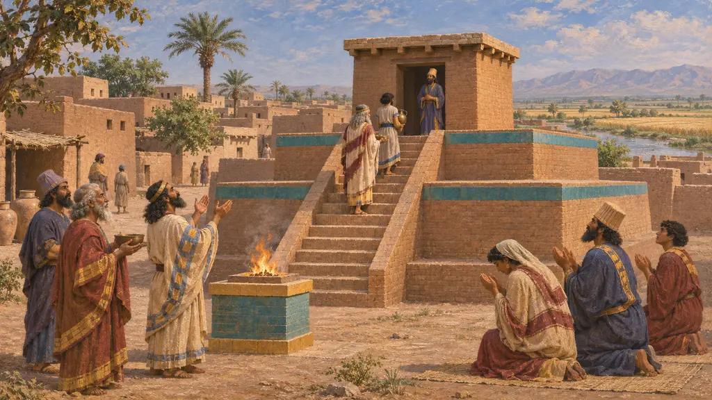
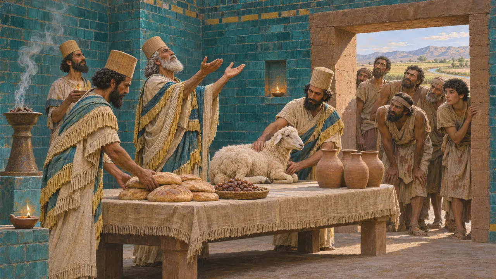
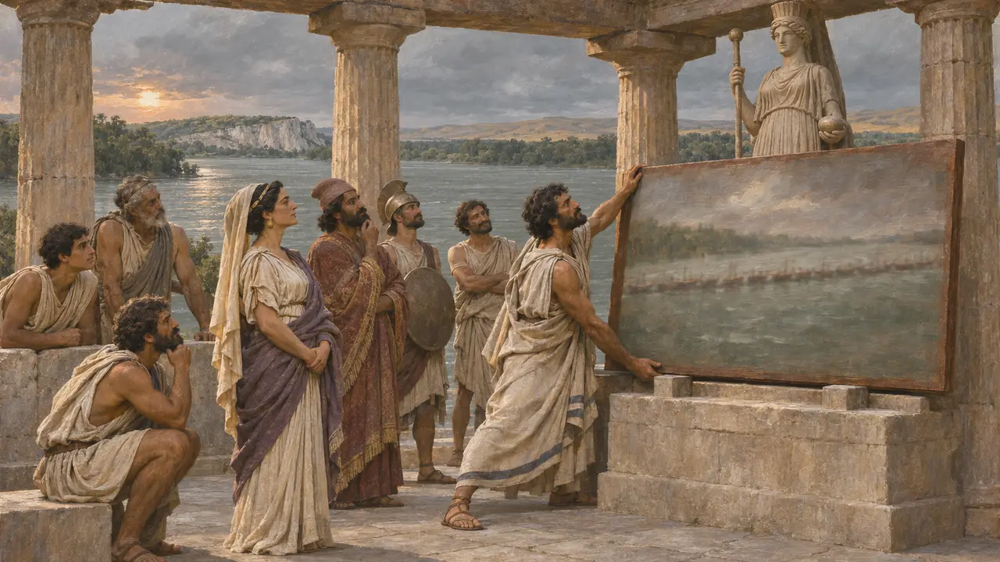

El imperio tenía muchos pueblos y pagaba a muchos dioses. El segundo pueblo de una ciudad quiere sus propios sacerdotes y sus propias fiestas, y los funcionarios del Rey lo sabían.
En el juego: El santuario propio de cada nivel sirve a su segundo pueblo: Humban en Parsa, Marduk en Susa, Hera en el Istro, Apolo en Maratón, un santuario en Acanto en el Atos.

Humban en Parsa
En los documentosLas tablillas de la Fortificación entregan grano y vino para Humban y otros dioses elamitas, en las mismas condiciones que para Ahuramazda.
Henkelman 2008


Santuarios griegos
Relato antiguoMandrocles hizo una ofrenda a Hera tras el puente del Bósforo, y Datis a Apolo en Delos. Los jonios llegaron con sus dioses, aunque no se sabe qué construyeron en campaña, así que estos santuarios también son suposiciones.
Herodotus 4.88, 6.97
Fuentes
- Henkelman 2008
- Herodotus